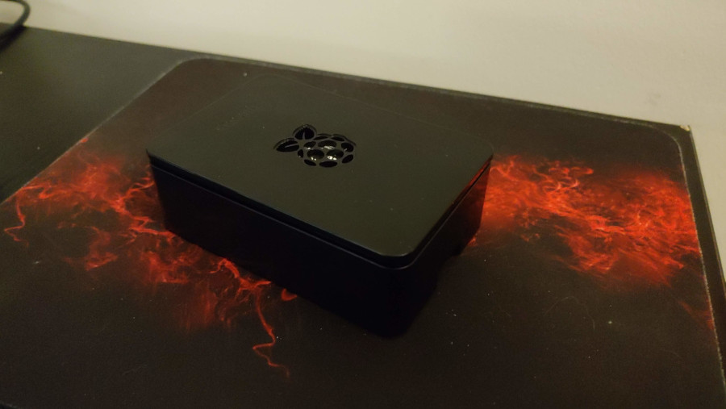

A personal blog on tech, politics, media, and anything else.
I have used Linux for a long time, since 2004 or 2005 if I recall. While it has not always been my main operating system, I have always come back to it because I always run into a point where I had to reinstall Windows, but did not have a paid-for copy when I was younger. And while I have used Linux for such a long time, I never took the time to learn all the ins and outs. However, I have been taking courses on it recently and got to a couple of the lessons that I have wanted to learn more, SSH and zrchive files.
I am completing these courses on a virtual image of Fedora MATE edition on a Windows gaming laptop because that computer has a higher core count and is more powerful. But needed a machine to SH into. I was setting up another virtual machine but was running into some issues there when I thought to myself, why not use the Raspberry Pi I have sitting around gathering dust. Once I got that working, one thing led to another and I was deep into reading guides on how to set up webservers and FTP servers on the Pi. I figured, there would be no better practice for what I was learning in the Linux course than practical application by transferring my site over to the Raspberry Pi and managing the machine remotely.
Below are three Youtube videos that I watched from Tony Teaches Tech that helped me get started.
Enable SSH on Raspberry PiTo set up an FTP server, I then also used this Pimylifeup guide.
I have been able to set up the FTP server and webserver, but I am still working on getting the domain name to point to the server. I will update this article when I get that working.
The Raspberry Pi I am using is a Raspberry Pi 4 with 4Gb of RAM and a 32Gb SD Card running Raspbian OS. I could see myself outgrowing this over the long-term because of storage space limitations; however, for right now I am just using this as a learning tool and do not have a reason to spend more money for something that will get very little traffic.
Overall, I am really enjoying learning about Linux and setting up the Raspberry Pi as a server. It has been a fun project and I am excited to see what else I can do with it.
{Update} So I used the chatbot feature in support for netlify and received the following walkthrough to point the newly purchased domain name to the Raspberry Pi server.
If you purchased your domain through Netlify, it will be automatically configured to use Netlify DNS by default. To point your domain to a webserver you are hosting on a Raspberry Pi (i.e., an external server), you need to update the DNS records for your domain in the Netlify dashboard.
Here’s how you can do it:
I was easily able to follow these instructions and will report back once I see that it is working properly. If so, then kudos to the chatbot that they utilize for guidance and this is a lot easier than I thought. And if this works, it is off to the races with managing my own site.